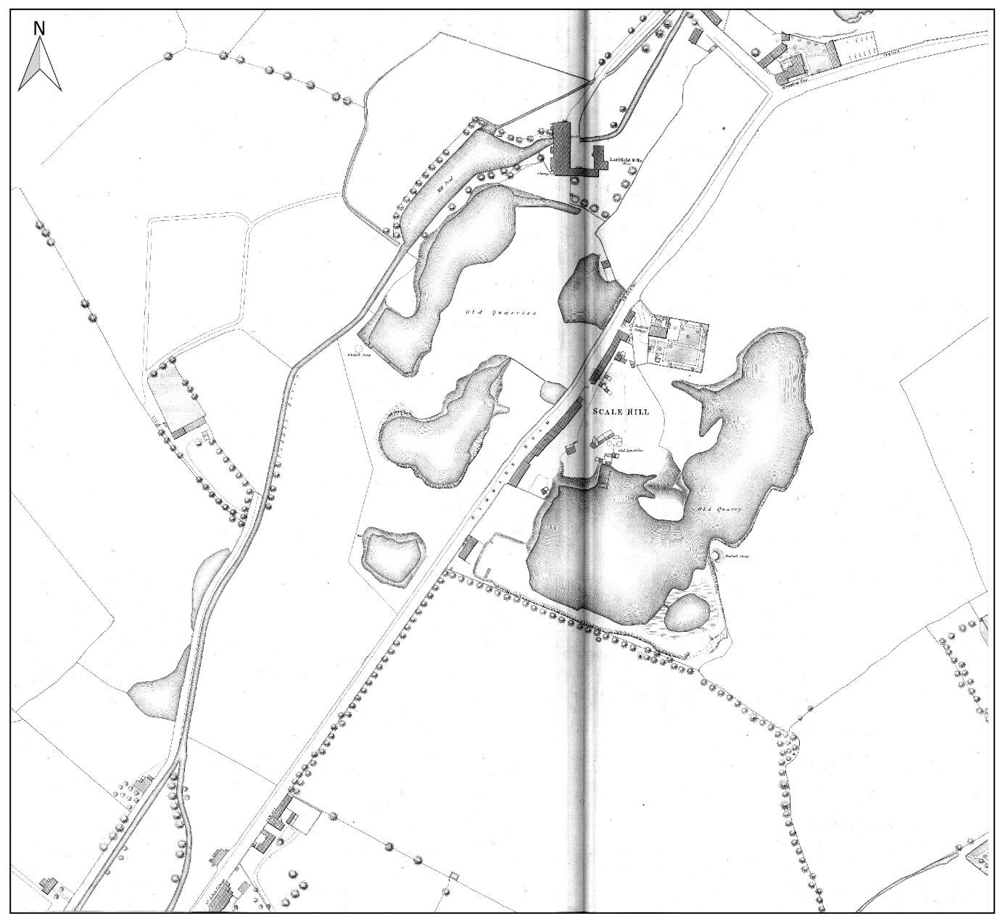
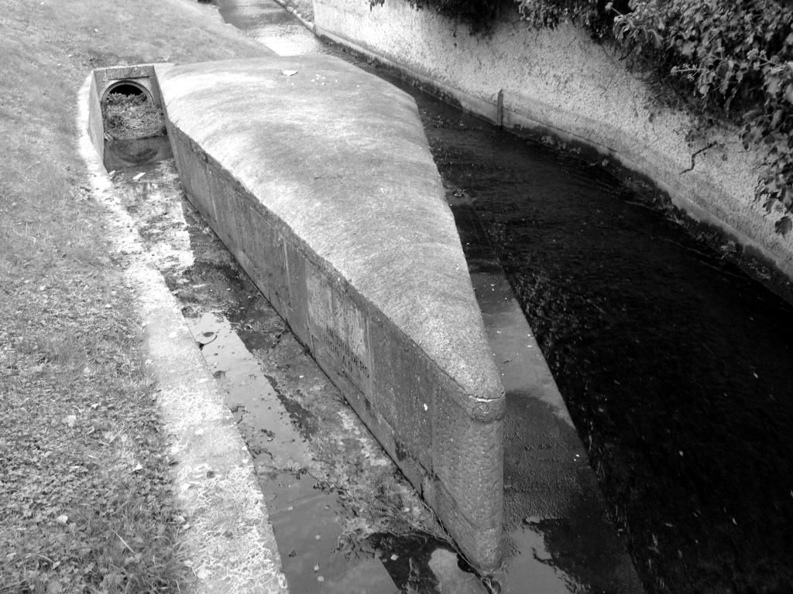
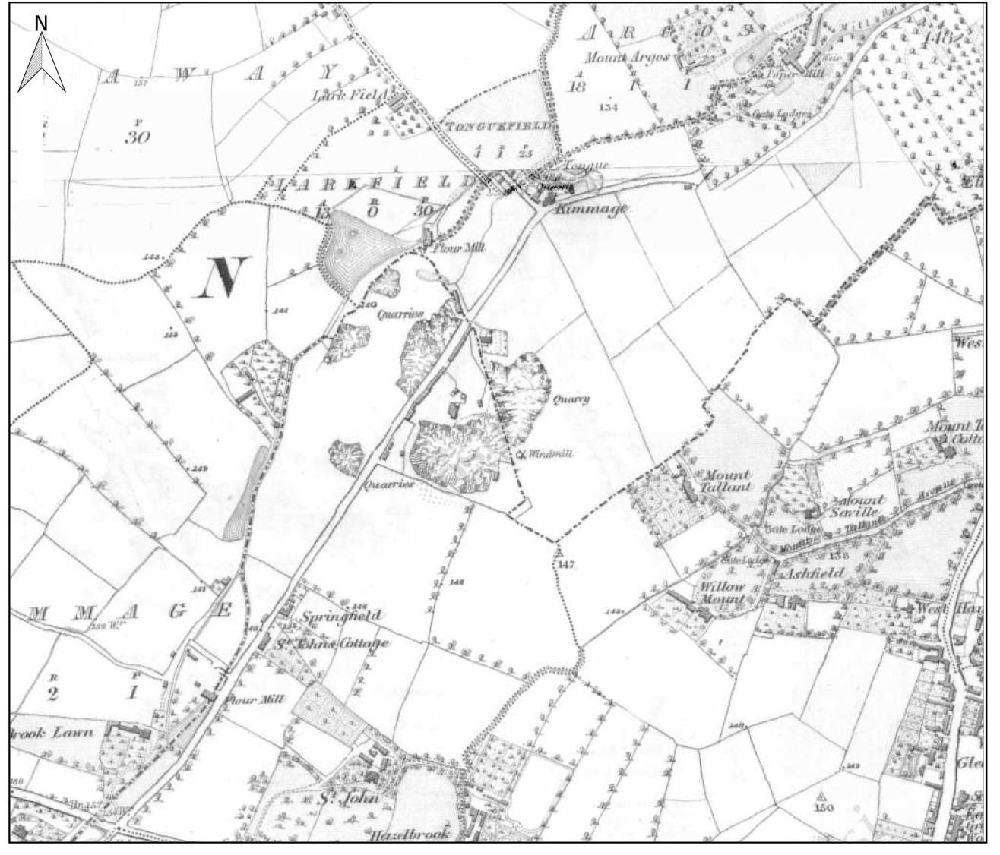
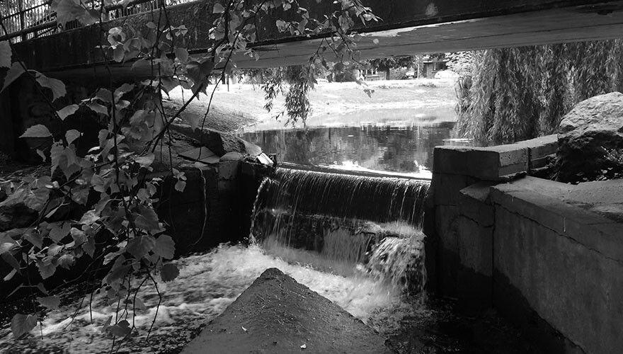

School walk · Kimmage, Mount Argus and Harold’s Cross
Kimmage to Harold’s Cross: the mill road
A walk down Kimmage Road Lower and Harold’s Cross Road, following the Poddle through the old mill country, past the Stone Boat that split the river in 1245, to the Grand Canal, where the river dives underneath.
- Length
- About 3 km, one way
- Time
- 2 to 2½ hours with stops
- Start
- Ravensdale Park, by Kimmage Cross Roads
- Finish
- Harold’s Cross Bridge on the Grand Canal
- Ground
- Footpaths along busy roads and short stretches through parks. Cross at pedestrian lights.
- Short version
- Stops 3 to 5, from Sundrive Road to Mount Argus: under 1 km, about 45 minutes
There is a printable workbook for this walk, The Mill Road Walk, at three levels from 1st to 6th class, with activities for every stop.
Before you go
- Kimmage Cross Roads, Sundrive Road and Harold’s Cross Road are busy. Cross only at pedestrian lights and keep the class together on the footpath.
- The flood scheme is building walls and bridges in Ravensdale Park and Poddle Park until 2027. Stay outside any hoardings; some paths may be closed.
- The river runs between high walls and steep banks. Keep back from railings and never lean over them.
- Our Lady’s Hospice and Mount Jerome Cemetery are near the end of the walk. Please pass them quietly.
Please plan the visit under your school’s own outings policy, and walk the route yourself first: paths and works change.
The route
The blue line is the river: solid where it is open, dotted where it runs underground. The numbers are the stops. River line © OpenStreetMap contributors.
The stops
Stop 1: Ravensdale Park
Off Kimmage Road Lower, just north of Kimmage Cross Roads
The Poddle comes out from under the crossroads here. On the first Ordnance Survey maps of the 1830s and 1840s this was Ravensdale Mills, a corn and flour mill with its own pond, sluice and weir, still on the map in 1940. Beside the crossroads, Farrington’s flour mill ran a water turbine into the 1920s, and Mr Farrington was said to be the first person in the area with electric light.
Today the park is being reshaped so that it can fill with flood water in a storm, with new walls and a new footbridge.
- Look for
- The river channel, and the new flood walls being built.
- Try this
- Look at the land around you. Is the park lower or higher than the road? Why would that help it hold flood water?
- Talk about
- Why would you build a park that is meant to flood?
Stop 2: Poddle Park
The road named after the river, just north of Ravensdale Park
This road is named after the river. Nearby, Larkfield Mills and its pond stood where Sundrive Shopping Centre is now. Another mill and a windmill stood near today’s St Martin’s Drive, and the stump of a windmill survives in St Martin’s Park.
Residents have photographed grey herons fishing in the river along this stretch.
- Look for
- The street sign. Then look for the river beside the road, and for a heron standing very still.
- Try this
- Compare the 1876 map with what you can see now. What has taken the place of the mill ponds?
- Talk about
- Why do you think the road was named after the river?

Ordnance Survey five-foot map, 1876, showing Larkfield Mill and its ponds. From the River Poddle flood scheme environmental impact assessment report, Chapter 11. Stop 3: The Stone Boat
From the bridge on Sundrive Road, looking south
Just east of Sundrive Road, a stone shaped like the bow of a boat sits in the river and splits it in two. The first one was built in 1245, when the Norman city of Dublin was short of water. Two thirds of the water stayed in the Poddle; one third went off in a man-made channel, the City Watercourse, to St Thomas’s Abbey and the city’s drinking water. The stone there now is a modern copy on the same design.
You can see it from the footpath on the bridge: look over the south side, upstream, and the stone is in the river just below you.
- Look for
- The pointed end of the stone facing the current, and the water parting on either side of it.
- Try this
- Share out 12 counters, or 12 children, the way the Stone Boat shares out the water. How many go each way?
- Talk about
- In 1245 there were no taps. Where did people in Dublin get their water?

The Stone Boat dividing the flow Stop 4: The Waterwheel
The Waterwheel apartments, Kimmage Road Lower
These apartments stand on the site of Loader’s Park Mills, a corn mill, and their name remembers its waterwheel. Along this short stretch of the Poddle there were once mills at Ravensdale, Larkfield, Loader’s Park, Mount Argus and Harold’s Cross, grinding corn and flour and making paper and cloth.
- Look for
- The name on the building. On the 1843 map, look for the word “Mill”: how many can you count?
- Try this
- Hold one hand flat and tilt it. Pour imaginary water down it. Mills were built where the land drops, so the water falls hard on the wheel.
- Talk about
- Why do you think so many mills were built close together on such a small river?

Ordnance Survey six-inch map, 1843, from Kimmage towards Harold’s Cross. From the River Poddle flood scheme environmental impact assessment report, Chapter 11. Stop 5: Mount Argus
Mount Argus Park and the church of St Paul of the Cross
This is the best place on the walk to see the river itself, tumbling over a weir in the park. A flood pond was made here in the 1980s. In the monastery grounds the river once fed a pond and a millrace for a paper mill.
The church was built in the 1870s. Saint Charles of Mount Argus, a priest known for healing, lived and died here and is buried in the church. Bats have been recorded here, and the old trees in the park may be where they roost.
- Look for
- The weir, and the river disappearing again at the end of the park.
- Try this
- Sketch the weir. Draw arrows to show which way the water goes.
- Talk about
- The river goes underground again just past the park. Where do you think it comes out?

The Poddle at Mount Argus Stop 6: Harold’s Cross Park
The village green where Kimmage Road Lower meets Harold’s Cross Road
Harold’s Cross was once a small mill village. The river runs just west of here, out of sight behind the houses, through the grounds of Our Lady’s Hospice and along the edge of Mount Jerome Cemetery. Downstream, Greenmount Mills made cotton and linen, and its mill pond was not covered over until the late 1960s.
The park makes a good place to stop for a snack before the last stretch.
- Look for
- The cemetery gates on Harold’s Cross Road. Mount Jerome opened in 1836, and the river runs along its eastern side.
- Try this
- Count the steps between here and the canal, or time the last stretch, to work out how fast the class walks.
- Talk about
- The river flooded Harold’s Cross in 2011. Why might a river that runs in pipes still flood?
Stop 7: Under the Grand Canal
Harold’s Cross Bridge (Robert Emmet Bridge)
When the Grand Canal was dug in the 1790s it cut straight across the Poddle’s path. Since then the river has gone underneath it in a siphon: a pipe that dips down below the canal bed and comes up on the far side. In 2003 archaeologists found the river rushing along at least five metres below the ground beside the canal.
From here the Poddle runs underground all the way through the Liberties to the Liffey.
- Look for
- The canal and the bridge. The river is under your feet, but you can’t see it.
- Try this
- Fill a bendy straw or a piece of tubing with water at school and try it: water goes down and comes up again on its own if the far end is lower.
- Talk about
- Why didn’t the canal builders just let the river flow into the canal?

How the siphon works. A simplified drawing, not to scale.
Want to go further?
From the canal, older classes can carry on along the river’s buried route through the Liberties to St Patrick’s Cathedral, about 1.5 km more, using the St Patrick’s Cathedral page. The Walk the Hidden River workbook covers the city end, from Blackpitts to the Liffey.
Back in class, the For teachers page has more ideas, and the workbooks include experiments on mills and floods. Try the Tymon Park walk too.